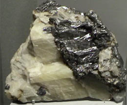
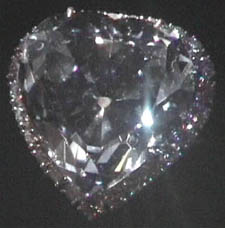
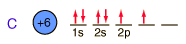

Carbon
Carbon forms more chemical compounds than any other element except hydrogen. Many of the chemicals in living organisms are hydrocarbons. The field of organic chemistry is primarily the chemistry of the compounds of carbon. Carbon binds to oxygen to form the carbonate ion CO32- and contributes to an important class of minerals, the carbonates.
Carbon has a density of 2.26 in the graphite form and 3.51 in the diamond form. Imperfectly formed crystalline forms of diamond are called bort and black diamond. They are slightly less dense than diamond and are somewhat tougher and harder. They are used for diamond drills and abrasives.
While diamond is the hardest substance, several carbon compounds called carbides rival its hardness. Boron carbide, B4C, is the hardest next to diamond but several of the metal carbides are extremely
hard and find application as cutting edges on high speed tools.
Diamonds and other precious gems are sometimes measured in carats, a term derived from the Greek word for a carob seed. Carob seeds were once used as measures of weight. One carat is equal to 0.007 ounces. The Cullinan diamond, found in South Africa in 1905, weighted 3,106 carats.
|

|
This sample of carbon in graphite form is displayed in the Smithsonian Museum of Natural History. The sample is about 13x13 cm and is from Ticonderoga, New York. It is formed with calcite.
|
Diamond on display in the Smithsonian Museum of Natural History.
|

|
Below is the expectation from the general order of filling of electron orbitals, but an important part of the bonding of carbon is the forming of sp3 hybrid orbitals.

|